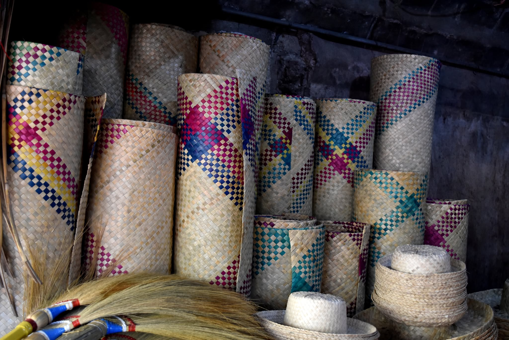
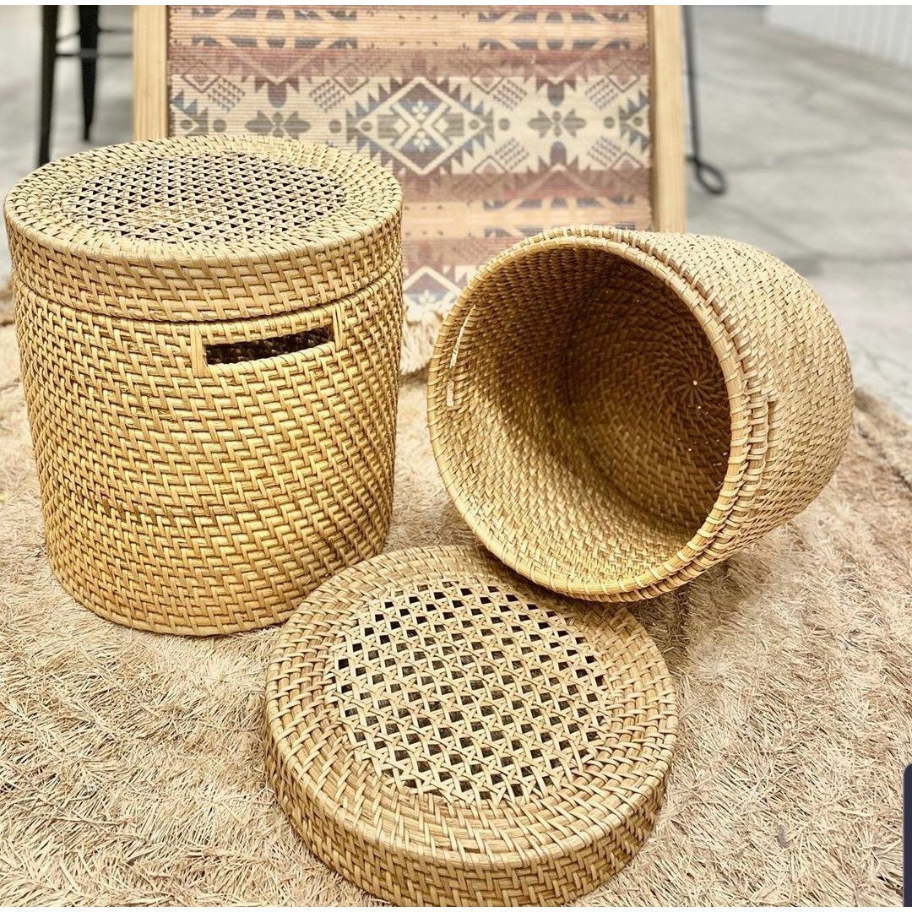
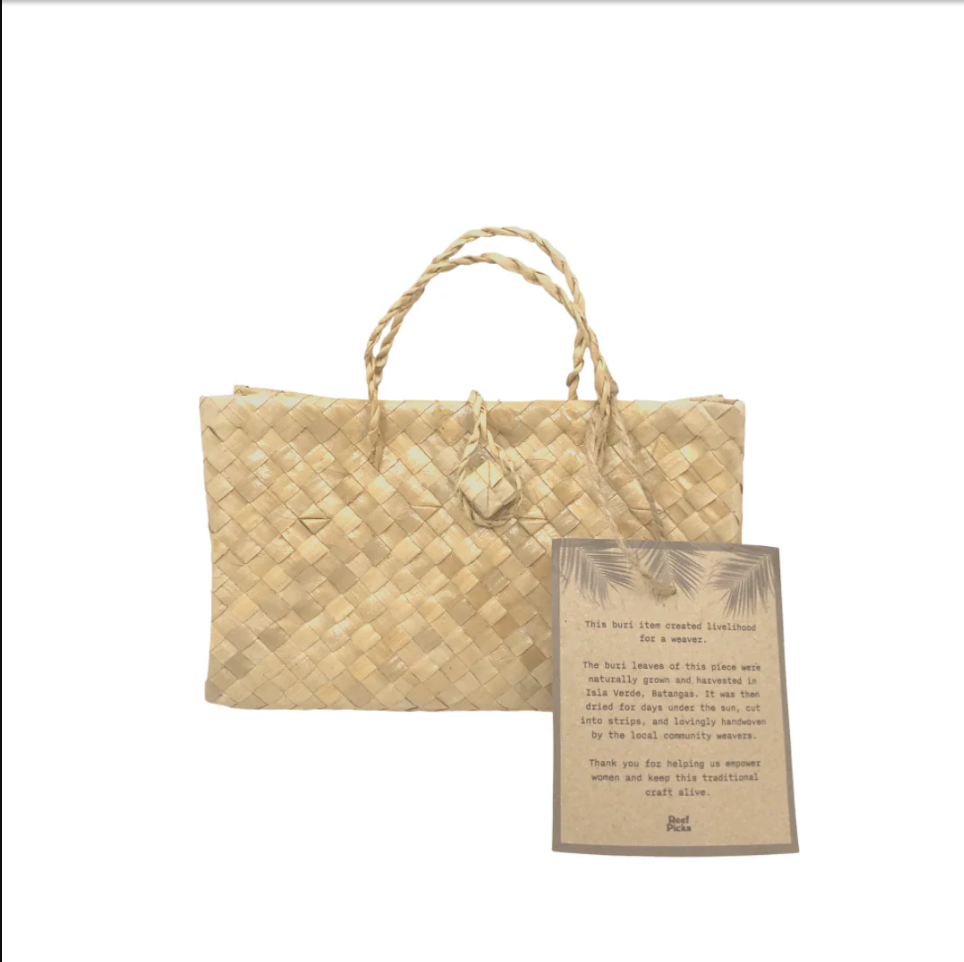
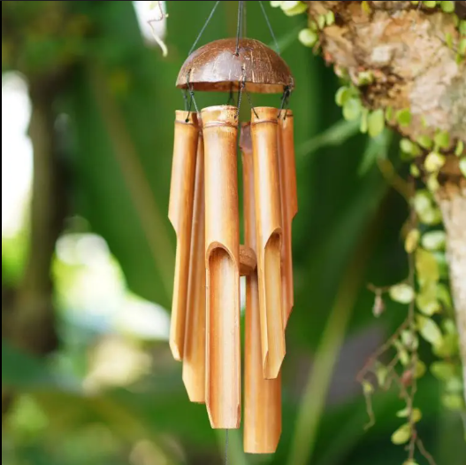
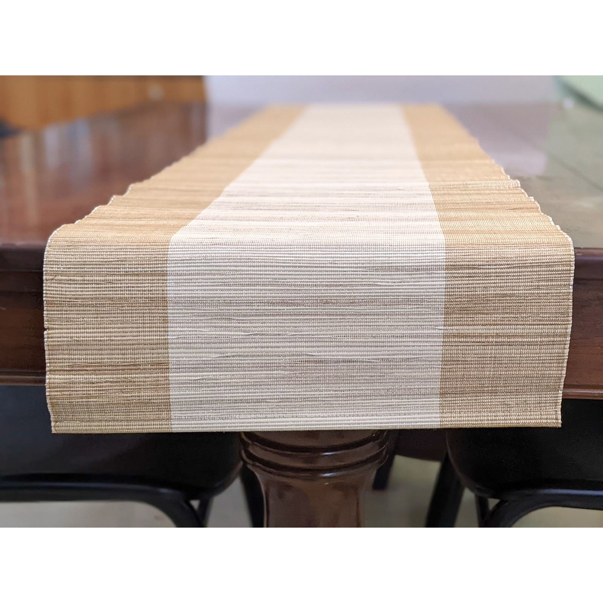
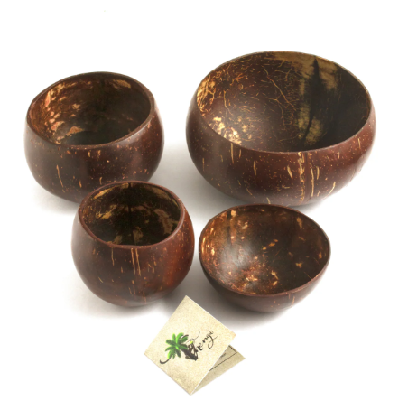

Treasures of Bohol
Treasures of Bohol
Treasures of Bohol
Treasures of Bohol
Discover the artistry of Boholano craftsmen through
beautifully
handwoven products made with indigenous
materials and traditional techniques

Traditional sleeping mat woven from buri or pandan leaves in intricate patterns. Each mat takes several days to complete and showcases generations of weaving expertise
Explore Category
Handmade rattan baskets crafted using indigenous techniques. These versatile items serve both practical and decorative purposes in Boholano homes.
Explore Category
Stylish and durable beach bags handwoven from native materials. Represents the fusion of traditional craftsmanship with contemporary design.
Explore Category
Hand-carved bamboo wind chimes that create soothing natural sounds. Each piece is unique, reflecting the artisan's personal touch and creativity.
Explore Category
Locally sourced organic products including coconut oil, honey, and herbal remedies produced by Boholano farmers.
Explore Category
Eco-friendly bowls crafted from polished coconut shells. Exemplifies sustainable practices and creative reuse of natural materials.
Explore CategoryEach handcrafted item represents hours of skilled work by local artisans who have mastered techniques passed down through generations. These crafts embody the patience, creativity, and attention to detail that characterize Boholano artistry. The use of natural, locally-sourced materials reflects a deep connection to the land and a commitment to sustainable practices. By showcasing these crafts, we help preserve traditional weaving arts and provide recognition for the talented artisans who keep these cultural traditions alive.